第18章
兵临城下：科学殿堂的危机
P值危机
万岁！又到了有趣的科学大求真时间！
先从此开始：你知道吗，当你读到一篇主题为“自由意志并不存在”的文章后，你会变得更有可能在考试中作弊。
你知道吗，当你在纸上绘出两个相距很近的点时，会比绘出两个相隔很远的点时，感觉与家人的感情更亲近。
你知道吗，当摆出某种“强势的姿势”时，你可以在抑制压力激素的同时提高睾丸激素水平，让别人觉得你更自信、更出色。
①PPT（演示文稿）的全称“PowerPoint”可直译为“强势观点”。
以上这些小知识并不是我瞎编的，而是由真正的科学家穿着实验服和（或）牛仔裤潜心研究得出的结论。它们在理论的基础上，通过实验进行检验，并接受了同行的审查。这些研究人员严格地遵循着科学的方法，绝对没有故弄玄虚。
然而，这三项科研成果，还有许多从市场营销到医学等领域的、看似严谨的研究成果，都纷纷受到了质疑。它们可能是错的。
纵观科学界的发展，我们正生活在一个充满危机的时代。经过几十年的努力，许多学者发现自己毕生的研究成果岌岌可危。这个危机的罪魁祸首不是缺乏诚信，不是研究不够完整全面，也不是外界那些反对自由意志的声音；真正的问题已经侵蚀到了研究过程的核心数据。它曾经成就了现代科学，现在却威胁着现代科学的稳定。1
1. 揪出混迹在必然中的偶然
我们知道，每一项科学研究都是为了解决一个问题。比如说，引力波真的存在吗？千禧一代厌恶自食其力吗？这种新药能治好反疫苗妄想症吗？不管问题是什么，都有两种可能的事实（“真”和“假”），鉴于证据本身的不可靠性，实验都有两种可能的结果（“阳性”和“阴性”）。因此，实验结果可以分为四类：
问题：世界上真的有鬼吗？
科学家最想要的结果是“真阳性”，这样的科学发现可以为他们赢得诺贝尔奖、恋人的亲吻和持续的研究经费。
“真阴性”的结果就没那么有趣了。这种结果就像你认为已经打扫好了房子，洗完了衣服，最后却发现都是黄粱美梦。尽管你找到了真相，但内心所渴望的却和眼前的真相截然不同。
但相比之下，“假阴性”更让人烦躁。就像明明知道丢失的钥匙大概在哪里，却不知为何就是找不到，你永远也不会知道自己离它有多近。
最后是最可怕的一类：假阳性。总的来说，它们是“偶然”的谎言，这些谎言在运气好的时候会被当作真理，可能会藏匿在研究文献中多年未被发现，让科学的发展走了弯路，并产生了大量浪费时间的后续研究。在科学对真理永无止境的追求中，尽管不可能完全避免假阳性，但还是要将其保持在最低限度。
这就是p值的作用，设计它的目的就是过滤纯属偶然的巧合。
以一个简单的科研实验为例，实验要解决的问题是“吃巧克力会让人更幸福吗？”我们随机地把热心参与研究的志愿者分成两组，一半人吃巧克力，一半人吃全麦饼干，所有人都用1（痛苦）到5（幸福）的数字描述他们的幸福感。我们预测巧克力组得分更高。
但这个设计是有漏洞的：即使巧克力和全麦饼干没有什么区别，两组的分数也几乎不可能完全一样。看看当我从相同数量的研究对象中随机抽取5个样本时会发生什么：
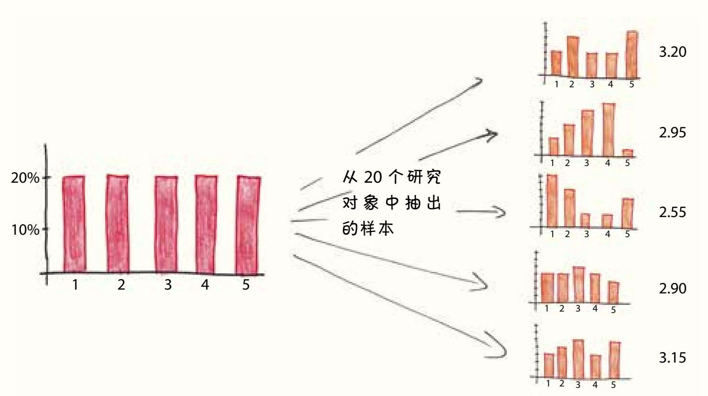
由于存在随机性，两个理论上相同的组可能会产生非常不同的结果。如果我们的巧克力组得分更高是纯属巧合呢？我们如何区分真正的幸福感提升效果和毫无意义的偶然巧合？
为了排除巧合事件，p值包含三个基本因素：
1. 差值的大小。微小的差距（比如3.3和3.2）比巨大的差距（比如4.9和1.2）更有可能是偶然。
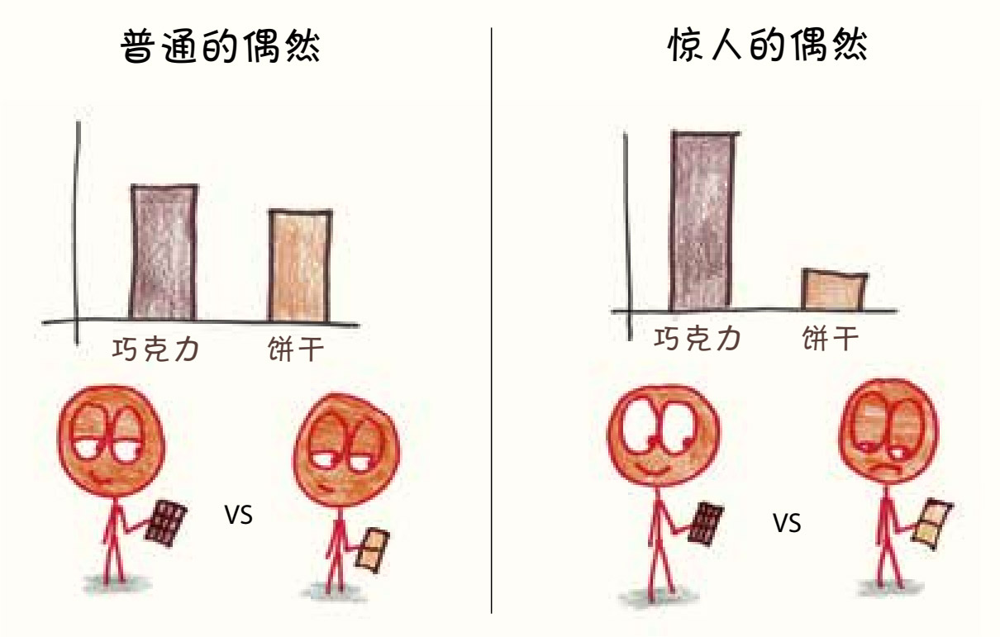
2. 数据集的大小。当样本只有两个人时，结果是难以让人信服的。也许我只是碰巧把巧克力给了一个热爱生活的人，把全麦饼干给了一个冷漠的虚无主义者。但是在随机抽取的2000人的样本中，个体差异应该可以消除，即使是很小的差距（3.08和3.01）也不可能都是因为偶然。
3. 每组的方差。当每个志愿者的幸福感评分离散度高、方差高时，很容易因为偶然得到不同的结果。而当评分离散度低、方差低时，偶然就基本不会造成明显的影响。
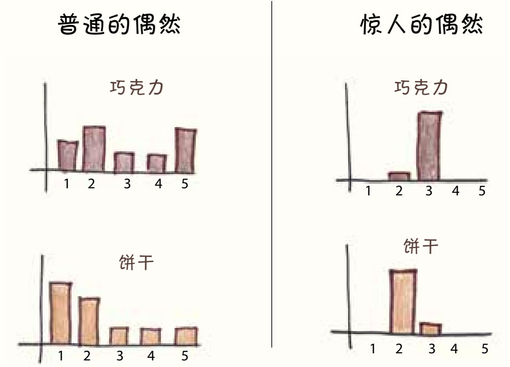
p值将以上三个因素整合为一个介于0和1的数字，为这些偶然的离谱程度打分。“数值越低，就表明结果越容易因为偶然偏离正轨。”接近于0的p值就代表一种非常离谱的偶然，离谱到它可能根本就不是偶然，是存在必然性的。
想了解更有技术性的讨论，请参阅尾注。2
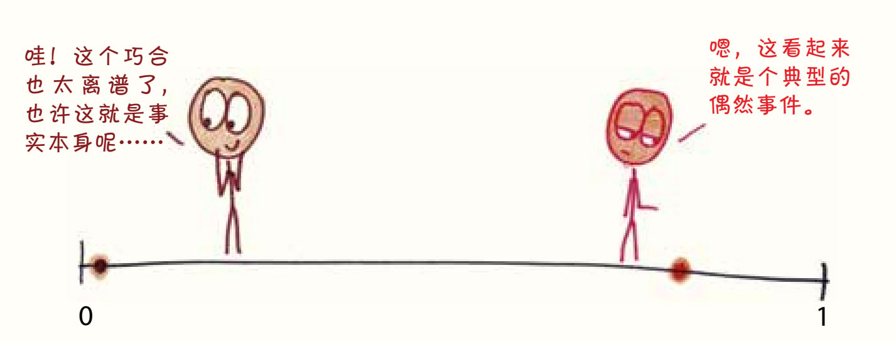
有些p值很容易解释，比如说0.000001就意味着百万分之一的巧合。这样的巧合是非常罕见的，在这种极端罕见的情况下，巧克力让人更快乐。
而如果p值为0.5，则表示事件发生的概率是50%，有一半的情况下会出现这样的结果，它们就像野草一样常见。所以，在这种情况下，巧克力和全麦饼干似乎没什么区别。
在这些截然不同的情况之间，存在一条有争议的边界。如果p值等于0.1呢？等于0.01呢？这些数字是否标志着这些看起来是纯属偶然的巧合存在必然性？虽然说p值越低越好，但是到底要多低才够呢？
2. 对巧合过滤器进行校准
1925年，统计学家罗纳德·埃尔默·费希尔（R. A. Fisher）出版了著作《研究人员的统计方法》（Statistical Methods for Research Workers）。3在这本书中，他提出以0.05作为统计中的过滤孔径。换句话来说，我们过滤掉20次巧合中的19次。
为什么只留下剩下的那一次呢？如果你愿意，也可以把这个门槛设得更高。费希尔也不介意考虑2%或1%，但这种为了避免“假阳性”的做法会带来一种新的风险——“假阴性”。剔除的巧合越多，过滤器滤去的真实结果也会越多。
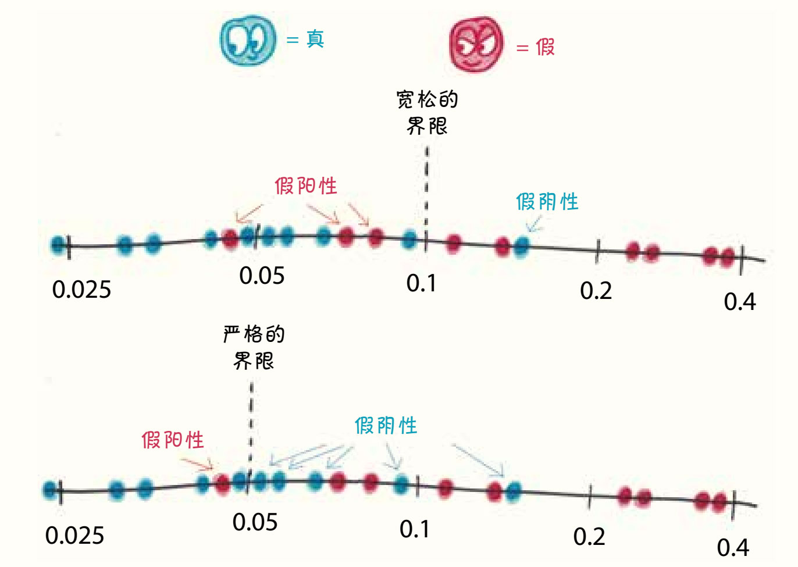
假设你在研究的课题是“男性是否通常都比女性高”，答案应该是“是的”。但如果你的样本中出现了一些偶然呢？如果碰巧选择了一些高于一般女性的女性、矮于一般男性的男性作为样本呢？那么严格的p值可能会让你否定这个答案，即使它是正确的。
数字0.05作为p值时代表的是一个灰色地带，介于监禁无辜者和让罪犯逍遥法外之间。
费希尔并不认为p值只能是0.05。他在职业生涯中，对p值的设定是非常灵活的。有一次，他在同一篇论文中接受了一个p值等于0.089的结果（“有充足的理由怀疑这种分布……不是完全的偶然”），但否定了一个p值为0.093的结果（“如果真的存在这种关联，那么这种关联还不够强大，显著性不足”）。
在我看来，费希尔这样做不无道理。统计学家不该简单粗暴地把所有事都用统一标准进行评价。如果你告诉我饭后薄荷糖可以治口臭（p=0.04），我会倾向于相信你；但如果你告诉我饭后薄荷糖可以治疗骨质疏松症（p=0.04），我就不那么相信了。我承认4%的概率很小，但如果骨骼健康与薄荷糖之间真的存在很强的关联，科学家对这种关联忽视了几十年的概率更小。
因此，我们还必须考虑新的证据是否与现有的知识矛盾，不是所有的p=0.04都是一样的。
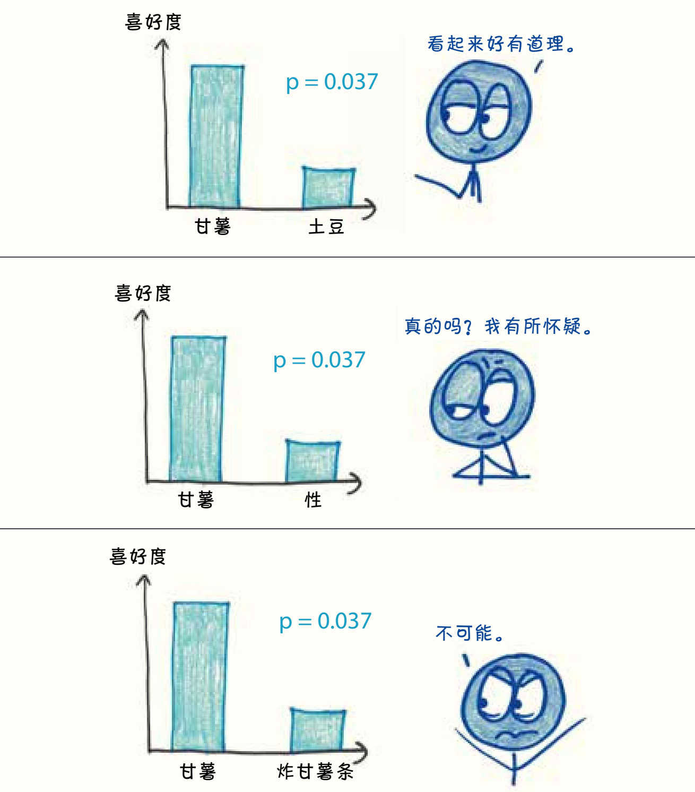
科学家是明白这个道理的。但在科学界这个以标准化和客观性马首是瞻的领域，逐案分析的细微判断很难得到辩护。20世纪，在心理学和医学等人文科学中，5%的p值逐步从“行业建议”发展到“行业指导”，最终成为“行业标准”。p=0.0499？足够显著了。p=0.0501？对不起，只能祝你下次好运了。
你可能会问，这是不是意味着有5%的认证结果是偶然事件？这么说不准确。应该反过来说，有5%的偶然事件会被认证为必然结果。
这是非常可怕的。
把p值想象成科学城堡里的守卫者。它欢迎 “真阳性”进入城堡，同时要在门口击退“假阳性”敌军。尽管我们知道有5%的敌军会混进来，这个比例看上去好像已经够小了。
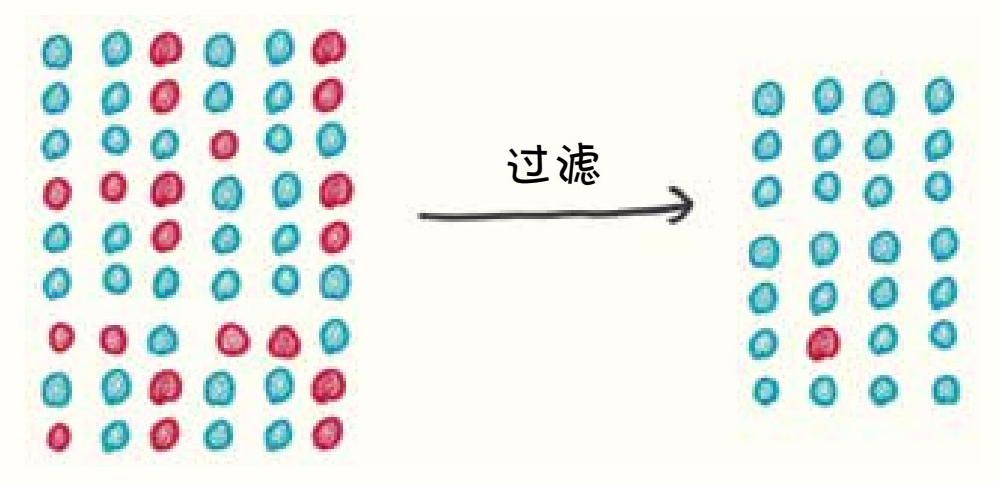
但是，如果进攻的敌军数量是我军的20倍呢？那么入侵敌军的5%将等于我们军队的全部。
更糟的是，如果进攻的敌军数量是我军的100倍呢？他们的5%将对我们有压倒性优势。城堡中充斥着假阳性的身影，而真阳性只能躲在角落里瑟瑟发抖。
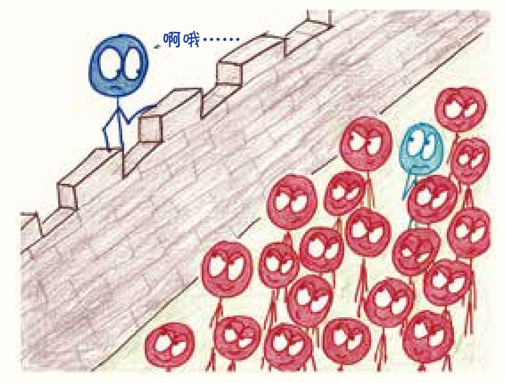
科学家进行了大量真正答案为“否”的研究，而危险就在这之中。“对口型会让头发变白吗？”“穿小丑鞋会引起酸雨吗？”如果科学家得到了100万个垃圾的研究结果，而将显著性水平设为5%，那就是有50 000个结论会被认为是真相。它们会蔓延到各种科学期刊，占据新闻的头版头条，让社交网络上有价值的信息越来越少。
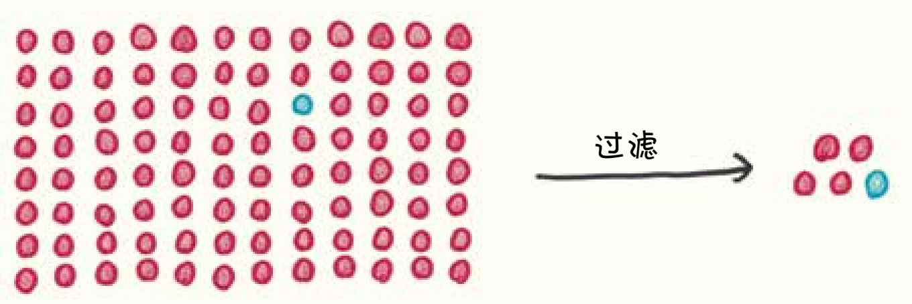
这还不是最令人沮丧的地方，事实上，情况会变得更糟——科学家无意中给这些敌军装备了抓钩和攻城锤。
3. 偶然事件的繁衍生息
2006年，心理学家克里斯汀娜·奥尔森开始留意和记录一种特殊的偏见现象：相较于不幸的人，孩子们更喜欢幸运的人4。奥尔森和她的同事发现，这样的偏见跨越了不同的文化5，而且从3岁一直到成年都会出现。既适用于那些有点儿坏运气（如摔了个狗啃泥）的人，也适用于遭受大灾难（如飓风）的人。这种效应稳健而持久——是真阳性。
2008年，奥尔森同意指导一个21岁学生的毕业论文6——没错，那个学生就是我。在她的大力帮助下，我设计了一个后续调查，研究5岁和8岁的孩子是否会倾向于把玩具给更幸运的人。
我对46个孩子完成测试后，发现答案是否定的。
不仅如此，我的研究结果还和奥尔森的完全相反：我的实验对象似乎更愿意把玩具给不幸的人。这个问题的难度远远没到“科学大求真”级别，一句话就能说清其中的道理：你当然会更愿意把玩具给弄丢了玩具的那个人。因为需要把这次实验结果憋成30页的论文，我仔细查看着那些数据。每个实验对象都回答了8个问题，问题中包含一系列不同的情况。因此，我可以用几种方法来划分这些数字：
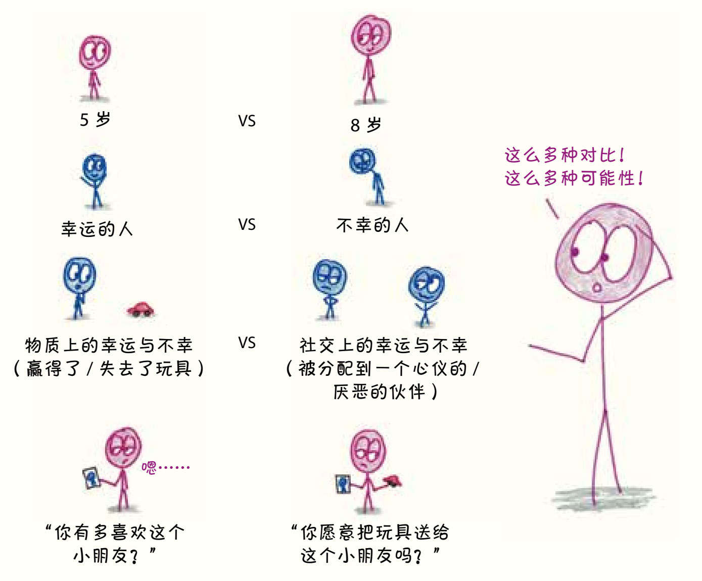
电子表格的这些行列，就是危险开始的地方。
从表面上来看，我的论文是站在科学城堡城门前的敌军，最关键的p值远远高于0.05。7但继续看下去，其他的可能性出现了。如果我只考虑5岁的孩子呢？或者只考虑8岁的孩子呢？或者只考虑幸运又得到玩具的人？还是只考虑那些不幸又得到玩具的人？性别有影响吗？用满分6分的量表表示自己喜欢其他孩子的程度，对于把玩具分给得分至少为4的其他孩子，如果8岁的女孩比5岁的男孩对情境更敏感会怎样呢？
如果，如果，如果……
通过不断地分解数据，我可以将一个实验转换成二十个。在p值抵挡了敌军一次、两次，甚至十次后，我都可以再为它换上新的伪装，直到它最终溜进城堡。
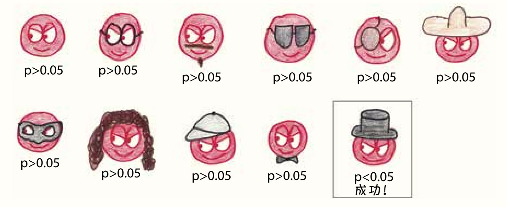
至此，本世纪可能最严重的方法论危机——“p值操控”诞生了。假如我们能找到一群热爱真理的科学家，让他们参加一场竞赛，如果得到阳性的结果就能拿走所有奖品，他们可能都会不由自主地像21岁的我一样，为自己钻空子的行为找借口。“好吧，也许我可以再检查一遍这些数字……”“我知道这个结果是对的，只要排除那些异常值就好……”“哦，调整了第7个变量后，p值会下降到0.03……”大多数研究都是模棱两可的，有一大堆的变量，还有很多可以站得住脚的解释数据的方法。你会选择将结果确定为“不显著”的方法，还是将p值降低到0.05以下的方法？
这种荒谬的例子并不罕见。在“伪相关性”网站8上，泰勒·维根（Tyler Vigen）梳理了数千个变量，发现它们之间有着密切而巧合的一致性。例如，从1999年到2009年，因掉进游泳池而淹死的人数与尼古拉斯·凯奇主演的电影数量有惊人的相关性。
也就是说，只要一直进攻偶然过滤器，p值黑客就能把一些假阳性混进来。
为了验证这一点，我把90人分成三组，为每个受试者分发一种饮料：直饮水、瓶装水或混合水。然后我测量了每个受试者的四个变量：他们跑100米所用时间，他们的智商分数，他们的身高，以及他们对碧昂丝的喜爱程度。接下来，我比较了所有的可能性。喝直饮水的人比喝瓶装水的人跑得快吗？喝瓶装水的人比喝混合水的人更喜欢碧昂丝吗？等等。这项研究花了我八个月的时间。
开个玩笑。我在电子表格中模拟了这个研究，耗时几分钟，运行了50次。
理论上，每个实验对象都是相同的：都是由相同的过程生成的随机数集合。任何出现的差异都是偶然的。尽管如此，通过进行三组受试者和四个变量的比较，我在50次试验中获得了18个“显著”结果。
p值并没有只让20个偶然结果中的1个通过，这些偶然的结果通过的概率超过了三分之一，还有很多漏网之鱼。
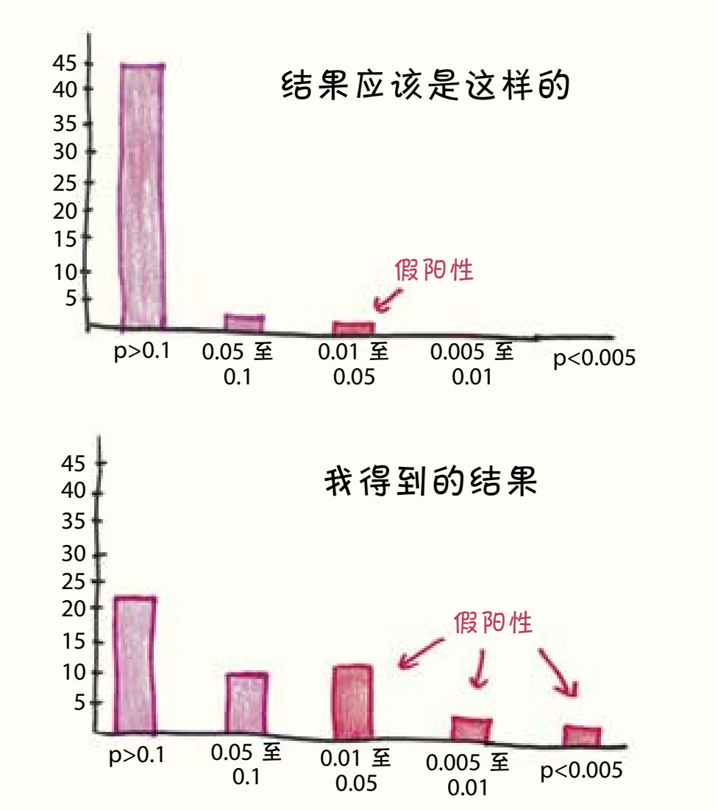
还有些其他方法可以操控p值。在2011年的一项匿名调查9中，有很大一部分心理学家承认自己进行过“有问题的研究实践”：
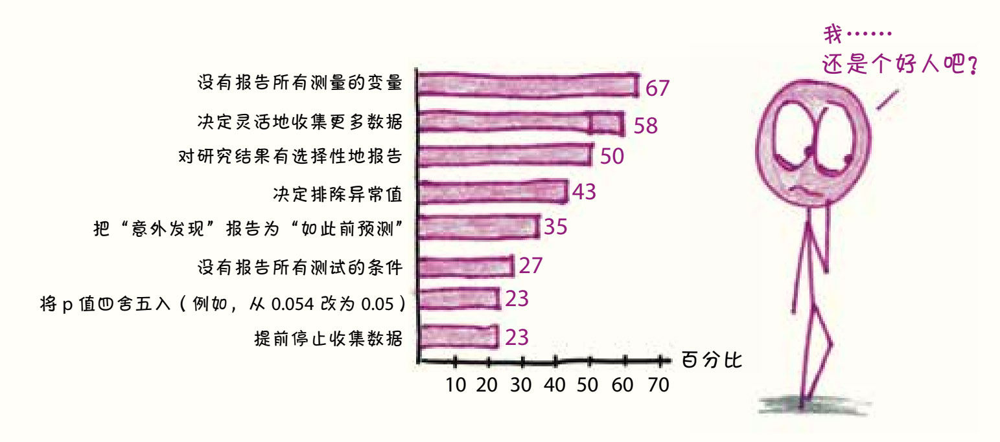
兔子急了也会咬人。当你无法确定初期结果时，你会去收集更多的数据。这看起来似乎无害，对吗？
为了评估这种p值操控的威力，我模拟了一项名为“谁是更好的抛硬币者？”的研究。这项研究非常简单：两个“人”（电子表格中的两列模拟数据）各抛10枚硬币，然后我们查看是否有其中一个人得到了更多的正面朝上。在20次模拟中，我获得了一次显著的结果。这符合p=0.05的要求，让人感觉板上钉钉了。
接下来，我允许自己继续自由实验。再抛一枚硬币，再抛，继续抛，直到p值低于0.05时（或者我们抛了1000次却还没有成功时），就停止这项实验。
结果改变了。现在，20次实验中有12次取得了显著的成果。
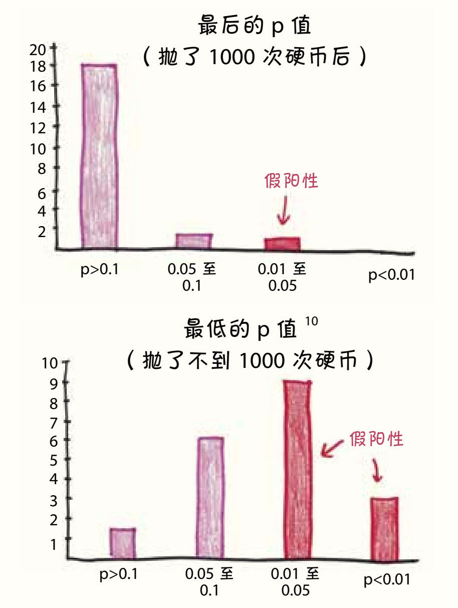
这样的把戏不符合科学的严谨态度，但也不能完全算作欺骗。在报告调查结果的论文中，三位作者将这种做法称为“科学竞争的激素，它人为地提高了科研成果，并把科学竞争变成一种军备竞赛，在这种竞赛中，严格遵守规则的研究人员是处于劣势的”。
有什么办法能让比赛更公平呢？
4. 向偶然事件宣战
这样的危机重新点燃了频率学派（frequentists）和贝叶斯学派（Bayesians）统计学家之间的宿怨。
从费希尔开始，频率学派就占了上风。他们的统计模型是中立的，并且遵从极简主义，不增加任何判断和主观评论。例如，p值并不关注所检验的是一个必然成功的假设还是一个疯狂科学家的假设，而主观分析是得出结果后才进行的。
频率学派：先统计，后判断。
贝叶斯学派则反对这种一视同仁。在面对看起来很合理的假设和看起来很荒谬的假设时，为什么统计学要装作漠不关心，好像所有的0.05都一样？
贝叶斯学派的做法是这样的。首先是“先验”，即对假设正确概率的估计。薄荷糖能改善口臭？正确概率高。薄荷糖能治疗骨质疏松症？正确概率低。通过贝叶斯公式，你可以把这个估计转化成数学形式。接下来，在开展实验后，统计数据会帮助你更新之前的数据，权衡新的证据和旧的知识。
贝叶斯学派并不关心实验结果能不能通过某个任意的偶然事件的过滤器。他们关心的是数据是否足以说服我们，让我们改变之前的观念。
贝叶斯学派：将判断融入统计中。
贝叶斯学派认为，属于他们的时代已经到来。他们断言，频率学派已经摇摇欲坠，是时候开启一个新时代了。频率学派对他们的反击则是提出先验的方式过于武断，很容易被滥用。他们提出了自己的改革方案，比如降低p值的阈值11，从0.05（或二十分之一）降低到0.005（或两百分之一）。
当统计学在被反复讨论的时候，科学也没有袖手旁观。心理学研究人员已经开始了对抗p值操控的缓慢而艰难的过程。这是一连串使研究过程透明的革新工程：研究人员需要预先登记研究，列出每一个测量的变量，并预先规定停止数据收集的时间以及排除异常值的规则。这就意味着，如果出现了一个使p值小于0.05、伪装成真阳性的假阳性结果，后续的研究人员也可以浏览研究报告，查看之前的19个伪装真阳性失败的结果。一位专家告诉我，真正能解决问题的正是这一系列改革，而不是频率学派和贝叶斯学派纠结的数学哲学。
不管怎样，我的毕业论文遵循了这些标准中的大部分。它列出了所有收集到的变量，没有排除异常值，并明确了分析的探索性质。不过，当我给克里斯汀娜看本书这一章时，她说：“在2018年看到你提起一篇2009年的论文真的很有意思。现在，我的学生在做毕业课题时都会预先登记他们的假设、样本大小等，看来这些年，我们的进步可真不小！”
所有这些都将减缓敌军通过城门的速度。不过，我们还要解决那些已经混迹入城的敌军。要识别它们，只有一个解决方案：重复实验。
假设有1000人都对10次抛硬币的结果进行了预测，他们中可能会有一个人将10次结果全部猜对。在你和这位新认识的预言家朋友自拍之前，应该先进行重复实验。让这个人再预测10次抛硬币的结果。也许要预测到30次、40次。如果他是真正的预言家，应该能保持100%的准确率，而如果他只是碰巧猜中，他预测的准确率将回落到和普通人一样。
所有阳性的结果都可以如法炮制。如果某个发现是真的，那么重复实验会产生相同的结果；如果它是假的，那么之前的结果就会像海市蜃楼一样消失。
重复实验是一项缓慢而乏味的工作，它耗财耗时，而且产生不了任何新的发现。但心理学家们知道它的重要性，并开始直面困难。一个在2015年发表的重要科研项目仔细地复制了100项心理学研究的实验。12实验结果发现，100个样本中有61个不能复制，这一发现轰动一时。
在这个严峻的消息中，我看到了科学的进步。学术研究界正冷静地面对现实、承认真相，尽管真相可能很丑陋。现在，社会心理学家希望医学等其他领域的研究人员也能效仿他们的做法。
科学从来都没有被定义为绝对的正确或超乎人性的完美。在科学中，我们应该以健康的怀疑态度检验每一个假设。这场战斗中，统计学是必不可少的盟友。是的，它曾经把科学带到了悬崖边，但我们可以肯定，它未来也会将科学带回正轨。